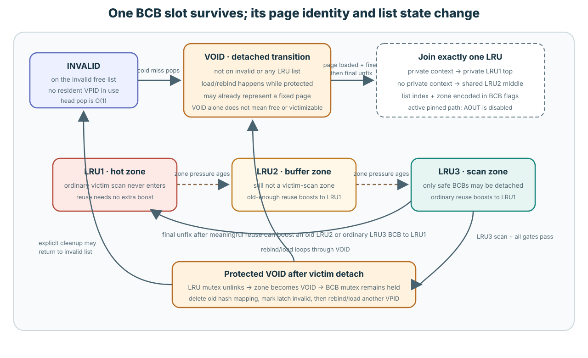
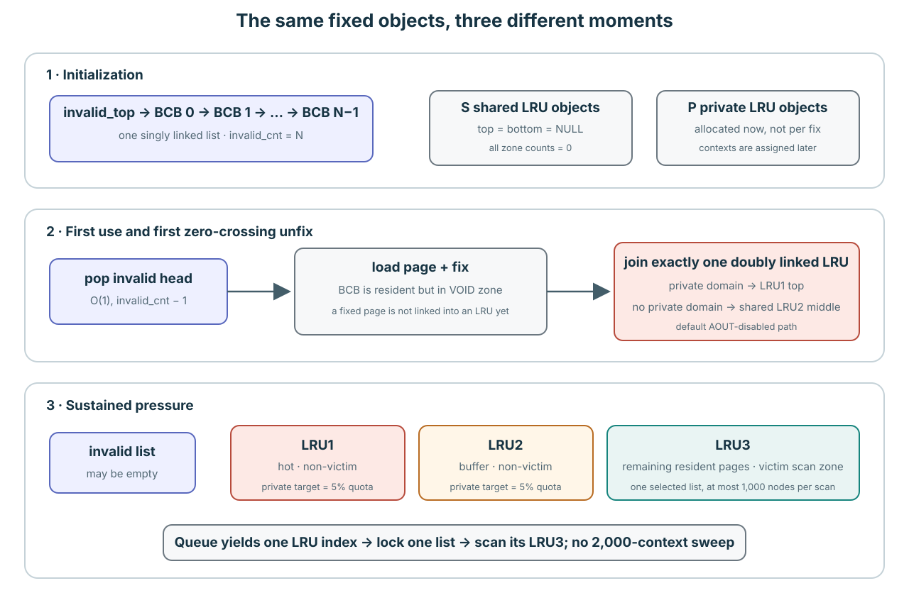
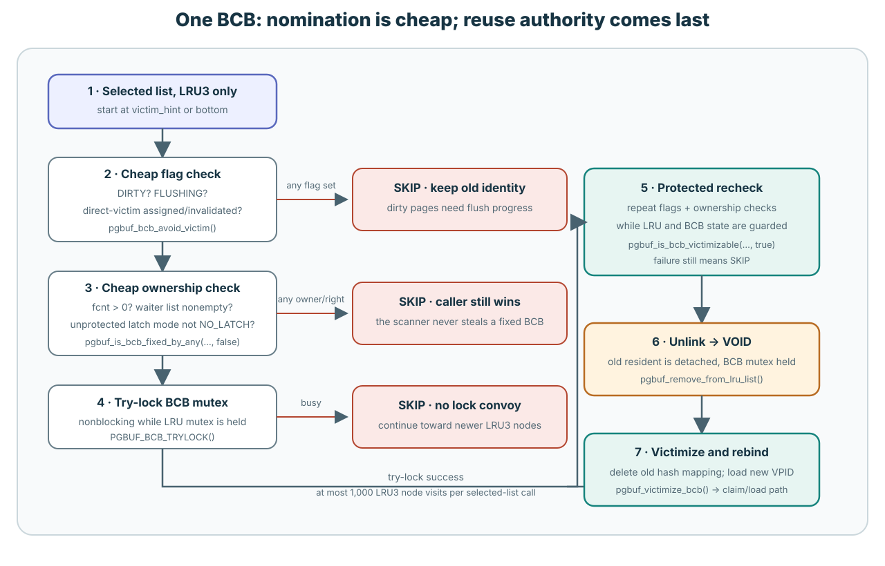
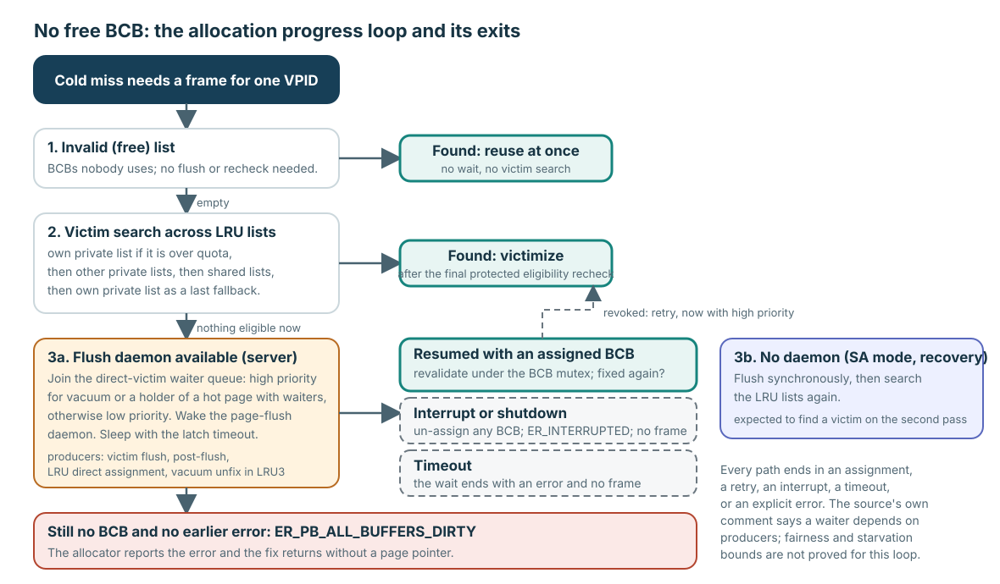

Page miss에 frame이 필요할 때 어디서 가져올까요?
사용하지 않은 BCB/frame pair가 INVALID list에 있으면 CUBRID가 그것을 꺼냅니다. Resident page를 제거하지 않습니다. INVALID가 비어야만 LRU의 차가운 끝에서 안전하게 replace할 resident page를 찾습니다.
Replacement는 고정된 BCB/frame pair 안의 VPID와 bytes를 바꿉니다. Pair를 새로 만들거나 BCB A를 다른 frame으로 바꾸지 않습니다.
짧은 경로는 INVALID pop → VOID에서 load → final unfix 때 LRU에 배치 → list pressure로 LRU3까지 demote → clean하고 idle인 LRU3 BCB를 detach 가능 → 이전 hash identity 제거 → 같은 pair를 rebind입니다.
VOID BCB는 모든 management list 밖에 있습니다

| 상태 | 쉬운 의미 | Victim search 여부 |
|---|---|---|
INVALID | Resident VPID 없이 전역 free/invalid singly linked list에 있습니다. | Allocation이 O(1)로 바로 꺼냅니다. |
VOID | INVALID에도 어떤 LRU에도 없습니다. Load 중, 첫 배치 전 fix 상태, 이동 중, protected detach 상태일 수 있습니다. | LRU scan에서 보이지 않습니다. |
LRU1 | 한 LRU의 보호된 상단 구간입니다. 소속 자체가 별도의 hotness 기준을 만족했다는 뜻은 아닙니다. | 아니요. |
LRU2 | 보호된 second-chance 부분입니다. | 아니요. |
LRU3 | 차가운 부분이며 ordinary victim search가 보는 유일한 zone입니다. | 예. 그러나 safety check가 모든 node를 거부할 수 있습니다. |
새로 load한 resident page는 첫 fix가 끝날 때까지 계속 VOID일 수 있습니다. VPID가 resident hash에 이미 들어 있고 fcnt가 양수일 수도 있습니다. VOID만으로 identity, ownership, dirty state, overwrite 가능 여부는 알 수 없습니다. prev_BCB/next_BCB가 현재 INVALID나 LRU에 BCB를 연결하지 않는다는 뜻뿐입니다.
소스: page_buffer.c:174–216,5559–5667,6636–6994,8904–8952,15860–15986.
왜 CUBRID의 LRU는 교과서의 exact LRU와 다를까?
Exact LRU는 접근 순서를 정확히 기억합니다. CUBRID는 여러 3구간 리스트 안에서 조건에 따라 배치를 바꿉니다. 전체 page를 하나의 정확한 최근 사용 순서로 관리하는 것은 아닙니다. 둘 다 과거 사용을 교체 판단에 활용하지만, 다음에 같은 page를 내보낸다고 보장하지는 않습니다.
교과서 모델을 떠올려 보세요. Hit나 최초 적재가 발생하면 그 page가 가장 최근에 사용한 항목(MRU)이 됩니다. Cache가 가득 찬 상태에서 miss가 나면 마지막 사용이 가장 오래된 resident page를 내보냅니다. 이 모델은 모든 resident page를 즉시 교체할 수 있다고 가정합니다. 실제 데이터베이스는 어떤 정책을 쓰든 사용 중인 page와 보존해야 할 변경을 추가로 보호해야 합니다.
Exact LRU가 접근 순서대로 세운 한 줄이라면, CUBRID에는 여러 줄이 있고 각 줄이 보호 구간 LRU1/LRU2와 후보를 찾는 구간 LRU3으로 나뉩니다. 줄을 다시 정리하는 시점도 조건부입니다. 이 구간은 정책상의 분류이지 물리적으로 분리된 세 buffer pool이 아닙니다. BCB를 옮겨 연결하는 것은 metadata 변경이며 page 내용이 저장된 frame을 옮기는 일이 아닙니다.
| 비교 질문 | 교과서 exact LRU | 고정 리비전의 CUBRID 정책 |
|---|---|---|
| 어떤 순서를 유지하나? | Cache 전체의 정확한 최근 사용 순서 하나. | Private/shared 리스트와 LRU1/LRU2/LRU3. 위치가 전체 page의 마지막 접근 순위를 뜻하지는 않습니다. |
| Hit가 나면 무엇이 바뀌나? | 접근한 page가 MRU가 됩니다. 이미 MRU라면 순서는 같습니다. | 일반 resident fix는 사용 권한을 부여하지만 다시 연결하지 않습니다. 조건을 만족한 final unfix에서 유지·승격·이동을 결정합니다. |
| 어떻게 교체 후보가 되나? | 다른 접근이 이어져 마지막 사용이 가장 오래된 page가 됩니다. | 리스트 압력으로 경계 노드가 LRU3까지 강등될 수 있습니다. 선택한 리스트의 LRU3을 검색하고 보호된 상태에서 자격을 검사합니다. |
| 어디서 victim을 찾나? | 하나의 순서에서 가장 오래된 끝. | Quota와 후보 광고 정보를 이용해 private/shared 리스트를 선택한 뒤, 선택한 리스트 안에서 제한된 범위를 검색합니다. |
| 어떤 관리 비용이 드나? | 정확한 접근 순서를 유지합니다. O(1) metadata 갱신에도 작업과 동기화 비용은 있습니다. | 조건부 재연결에 더해 zone·domain·quota·후보 정보를 관리합니다. 어느 정책도 공짜이거나 항상 더 빠르지는 않습니다. |
Verified mechanism / 소스: 해제와 zone 분기, 리스트 선택. 특정 리비전의 비교이며 runtime 측정 결과가 아닙니다.
P에 다시 접근하면 R 앞으로 갈까?
기존 32,768-frame 구성 예제의 일부를 살펴봅니다. Frame 네 개짜리 CUBRID 설정이 아닙니다. F43에는 R, F42에는 P가 들어 있습니다. Private 리스트 32의 LRU1에서 왼쪽이 top입니다: R → P → H1 → H2. Exact LRU와 비교할 때에만 같은 표시 순서를 MRU → 오래된 항목으로 놓습니다. 나머지 page는 그대로입니다.
A가 resident P를 성공적으로 READ-fix한 뒤 유일한 fix를 해제합니다. P는 clean·non-hot이며 A의 private domain과 일치합니다. Waiter, 특별한 hint, 동시 접근, quota 조정은 없습니다. P를 보유하는 동안과 final unfix 후의 순서를 각각 예측해 보세요. Fix count는 0 → 1 → 0으로 바뀌며 page identity와 frame은 F42/P 그대로입니다.
세 시점의 순서 비교 펼치기
| 시점 | Exact LRU | CUBRID LRU1 |
|---|---|---|
| P 접근 전 | R → P → H1 → H2 | R → P → H1 → H2 |
| P 접근 / fix 성공 후 | P → R → H1 → H2 | R → P → H1 → H2 |
| 해제 후 | P → R → H1 → H2 | R → P → H1 → H2 |
Exact LRU는 접근을 즉시 순서에 반영합니다. 이 비교에서 해제는 별도의 접근이 아닙니다. CUBRID의 일반 fix는 소유권을 부여하지만 연결 순서를 바꾸지 않습니다. Final unfix에서도 이동을 요구하는 예외가 없으므로 LRU1 분기가 P를 그대로 둡니다. 가장 최근에 접근한 page는 P인데 R이 위에 남습니다. 이 사례 하나만으로도 exact recency 순서라는 해석은 성립하지 않습니다.
Keep 분기는 재연결을 위한 LRU mutex 작업이 필요 없습니다. 그렇다고 잠금이 전혀 없는 것은 아닙니다. 보호된 unfix는 BCB mutex를 보유하며 activity를 등록할 수도 있습니다. “이동 없음”과 “metadata 작업 없음”은 다릅니다.
이 결론에는 앞의 조건이 붙습니다. 모든 P 접근이 위치를 유지한다는 뜻은 아닙니다. 원래 fix 확인 지점과 final-unfix 확인 지점에서 개수, tick, 실제 분기를 이어서 확인할 수 있습니다.
Final unfix는 무조건 이동이 아니라 판단 시점이다
Final은 전체 fix count가 0이 된다는 뜻입니다. 한 호출자가 사용을 마쳤다는 뜻만은 아닙니다. 다른 fix가 남아 있으면 이 zero-count 배치 경로에 도달하지 않습니다. Move-to-bottom 요청과 대기 중인 reader/writer에게 넘기는 경로도 일반 zone 분기의 실행 여부에 영향을 줍니다.
일반 zone 분기 안에서도 ignore hint와 private-to-shared 이동 조건을 먼저 확인합니다. 그런 예외가 없다면 다음과 같이 동작합니다.
- LRU1: 현재 위치를 유지합니다.
- LRU2: 리스트 이벤트로 계산한 age가 충분히 클 때만 LRU1으로 승격합니다. 그렇지 않으면 유지합니다.
- LRU3: 예외 검사를 통과한 일반 경로에서는 LRU1으로 승격합니다.
냉각은 반대 방향입니다. Scan으로 새 page가 들어와 zone 임계치를 넘으면, 해당 page에 다시 접근하지 않아도 경계 노드가 LRU1 → LRU2 → LRU3으로 내려갈 수 있습니다. 벽시계 시간이 흐르는 것만으로 이동하지는 않습니다. 기존 scan 예제에서 정확히 어느 경계가 바뀌는지 계산합니다.
서로 다른 세 기준을 섞지 마세요. 리스트 이벤트 age는 LRU2 승격 판단에 쓰이고, 유효한 quota 조정의 epoch는 activity 표본 등록을 제한하며, 별도의 hot-fix 기준은 migration 판단에 관여합니다. 어느 것도 정확한 마지막 접근 시각이 아니며, LRU1에 있다는 사실만으로 별도의 hot 판정이 참인 것도 아닙니다.
소스 확인 지점: zero-count와 waiter 조건, LRU2/LRU3 결과, 리스트 이벤트 age 검사, zone 조정. Lecture 12B에서 activity 필드를 구분합니다.
배치, 검색, 안전한 재사용은 서로 다른 결정이다
- 배치: 이 BCB를 어느 리스트와 zone에 둘까요? Private 리스트는 실행 문맥과 연결된 정책 영역이지 독점적인 개인 사본이 아닙니다. 여러 문맥이 같은 영역을 공유할 수 있습니다. Domain 불일치나 hot-and-old 조건이 있으면 private 항목을 현재 LRU1 top이 아니라 shared LRU2로 옮길 수 있습니다.
- 검색: INVALID가 소진되면 어느 리스트에서 후보를 구할까요? Quota와 후보 광고 정보가 own-private, other-private, shared 검색에 영향을 줍니다. Quota는 정책 목표이지 물리 메모리의 고정 칸막이가 아닙니다. 리스트 선택 자체가 전체에서 가장 오래된 page를 찾거나 frame을 예약하는 것도 아닙니다.
- 안전한 재사용: 후보의 이전 identity를 정말 제거해도 될까요? 선택한 리스트의 검색 경로는 LRU3, flag, fix, waiter와 잠금을 확인한 뒤 보호된 상태에서 다시 검사합니다. List detach, 이전 hash identity 제거, 새 page binding은 별개의 사건입니다.
안전성은 CUBRID만의 LRU 차이가 아닙니다. Exact LRU를 선택한 데이터베이스도 pinned page를 보호하고 WAL/writeback 절차로 dirty data를 보존해야 합니다. 정책이 선호하는 page라도 사용할 수 없으면 다른 적격 후보를 고를 수 있습니다. Flush 후에도 page는 resident일 수 있고, re-dirty되면 계속 부적격일 수 있습니다. 좋은 순위나 대기만으로 진행을 보장하지는 않습니다.
Migration 조건 · 리스트 선택 · 보호된 후보 검색. Domain 이동, quota와 검색 순서, 데이터베이스 공통 안전 조건으로 이어집니다.
순서 갱신을 줄이는 이유와 남는 비용
R/P 예제는 정확한 recency 순서를 유지할 때 필요한 재연결을 생략합니다. 동시 접근에서는 공유 metadata의 재연결을 조율하는 비용도 고려해야 합니다. 고정 소스의 주석은 LRU1 항목을 제자리에 두는 이유로 성능상의 의도를 명시합니다. 하지만 그 주석은 benchmark 결과가 아닙니다.
CUBRID도 BCB 동기화, 조건부 리스트 갱신, 경계 관리, activity/quota 집계, 후보 검색 비용을 지불합니다. 여러 리스트가 일부 metadata 작업을 분산할 수는 있지만 경합을 없애지는 않습니다. Exact LRU와 CUBRID가 다른 victim을 선택할 수 있으므로 순서 관리 작업을 줄이는 대신 miss 양상이 달라질 수 있습니다. 전체 효과는 workload에 따라 측정해야 합니다.
CUBRID가 항상 더 빠르거나, scan의 영향을 받지 않거나, 최적이거나, starvation이 없다고 결론 내리면 안 됩니다. 이 baseline의 AOUT은 비활성이므로 “CUBRID는 2Q다”도 충분한 설명이 아닙니다. 기존 quota·검색·진행의 불확실성은 근거 레지스트리에 남아 있으며, 이 설명이 해결한 것은 아닙니다.
LRU1 유지의 성능 의도를 설명한 주석 · 비용과 수량의 정본 설명 · 버전별 불확실성 · 즉시 승격 제안을 검토하는 정책 방어 연습.
구체적인 수치와 소스 확인 지점으로 최초 배치와 재접근 따라가기 →
List pressure가 BCB A를 점진적으로 차갑게 만듭니다

- Startup: A는 frame A와 영구적으로 짝지어진 INVALID-list node입니다.
- Page P의 첫 miss:
pgbuf_get_bcb_from_invalid_list()가 A를 꺼냅니다. A는 VOID가 되고 VPID P와 P의 bytes를 받은 뒤 fix됩니다. - 첫 final unfix: global
fcnt가 0이 되면 execution context의 enabled private-LRU assignment에 따라 private LRU1 top으로 가고, assignment가 없으면 shared LRU2 middle에 들어갑니다. 정확한 규칙은 Lecture 0012B가 설명합니다. - 차가워짐: 이후 삽입으로 protected zone이 threshold를 넘으면
pgbuf_lru_adjust_zones()가 오래된 boundary node를 LRU1 → LRU2 → LRU3로 내립니다. 시간만 흐른다고 A가 이동하지는 않습니다. - Second chance: P가 다시 fix되면 LRU3에서의 final unfix는 보통 A를 LRU1으로 올립니다. A가 victim candidate가 되려면 다시 차가워져야 합니다.
- Victim: A가 LRU3에서 clean하고 idle인 상태로 남으면 선택된 scan이 A를 lock하고 protected VOID로 detach할 수 있습니다.
- Rebind:
pgbuf_victimize_bcb()가 A를 재확인하고 resident hash에서 P를 제거한 뒤 miss path가 같은 A/frame pair에 page Q를 연결합니다.
“Candidate”, “detached”, “victimized”는 서로 다른 순간입니다. LRU3 membership은 A를 search 가능하게 만듭니다. Detach는 LRU에서 제거하지만 이전 P가 아직 hash에서 보입니다. Victimization이 P의 identity를 제거합니다. 그 후에야 Q가 이 pair를 받을 수 있습니다.
후보 거절 예측 · 보호된 C50/Q → C50/T 재사용 추적
LRU3에 있는 것 외에도 모든 현재 상태가 안전해야 합니다

| 현재 BCB A | 현재 결과 | 이유 |
|---|---|---|
| INVALID | Victimization 없이 바로 할당 | 제거할 이전 resident page가 없습니다. |
| VOID, LRU1, or LRU2 | 검사하지 않음 | Ordinary victim search는 한 LRU3 chain만 따라갑니다. |
LRU3 + DIRTY | 건너뜀 | 변경된 bytes를 먼저 성공적으로 flush해야 합니다. |
LRU3 + FLUSHING | 건너뜀 | Write generation이 아직 in flight입니다. |
LRU3 + fcnt > 0 or waiter | 건너뜀 | Caller가 bytes를 소유하거나 기다리고 있습니다. |
LRU3 + non-NO_LATCH sample | 건너뜀 | Count 0이 latch transition 중에 관찰된 값일 수 있습니다. |
| LRU3 + direct-victim flag | Ordinary scan에서 건너뜀 | 다른 allocator handoff가 A를 참조합니다. |
| LRU3 + BCB try-lock failure | 이번 visit에서 건너뜀 | LRU mutex를 가진 채 A를 기다리지 않습니다. |
| Clean하고 idle인 LRU3, flag/waiter 없음, mutex와 protected recheck 성공 | A를 detach | BCB mutex를 유지하며 A가 LRU3 → VOID로 바뀝니다. |
pgbuf_get_victim_from_lru_list()는 이미 선택된 LRU index 하나를 받습니다. victim_hint 또는 bottom에서 시작해 prev_BCB를 따라 최대 1,000개의 BCB node를 봅니다. 1,000개 list나 모든 transaction을 순회하는 것이 아닙니다. Private threshold demotion D는 이 bounded walk 전에 일어날 수 있습니다.
소스: page_buffer.c:221–263,9256–9538,16217–16228.
List membership은 transaction ownership이 아닙니다
Session은 이미 존재하는 private-list ID 하나를 빌릴 뿐 private cache를 받는 것이 아닙니다. 여러 session이 list를 공유할 수 있고, 다른 domain이 그 BCB를 fix할 수 있으며, assignment를 release해도 BCB를 비우지 않습니다.
G와 G+1 완료 비교 · reservation, 취소, retry 예측
CUBRID는 BCB가 안전해질 때까지 기다립니다

INVALID가 비었고 normal search도 실패하면 pgbuf_allocate_bcb()는 direct-victim waiter queue에 들어가 flush daemon을 깨울 수 있습니다. Producer가 BCB를 clean한 뒤 reserve할 수 있습니다. 소비하기 전에 다른 fix가 접근하면 reservation을 취소하고 allocator가 retry합니다.
DIRTY LRU3 BCB는 WAL-safe page write가 완료된 뒤에야 재사용할 수 있습니다. Write 중에는 FLUSHING이 replacement를 계속 막습니다. Page가 generation G+1로 다시 dirty해지면 그 새 debt가 direct assignment를 막습니다.
모든 allocation path는 assignment, retry, interrupt, timeout, explicit error 중 하나로 끝납니다. ER_PB_ALL_BUFFERS_DIRTY는 fallback error 이름이며 모든 BCB가 실제로 dirty였음을 증명하지 않습니다. Source는 특정 waiter의 wall-clock fairness를 증명하지 않습니다.
소스: page_buffer.c:8181–8403,9067–9253,10925–10952,15420–15652,16972–17255.
두 정책은 서로 다른 대기자에게 다음 기회를 준다
배정 무효화 예제의 A는 원래 요청한 페이지를 담을 프레임이 여전히 필요하다. 첫 배정 무효화에서 pgbuf_get_direct_victim()이 NULL을 반환하면 allocator는 high_priority = true로 설정하고 대기열에 다시 들어간다. 이후 재시도에서도 높은 우선순위를 유지한다. A의 다음 시도를 우대하지만, 다른 스레드가 기존 페이지를 다시 fix하는 것을 막지는 않는다.
항상 high부터 확인하면 높은 우선순위 작업이 계속 들어오는 동안 low에서 기다리는 일반 요청이 계속 밀릴 수 있다. 따라서 pgbuf_get_thread_waiting_for_direct_victim()은 공유 호출 카운터를 증가시키고, 그 값이 4의 배수일 때 low부터 꺼내기를 시도한다. 이 시도가 실패하거나 다른 회차이면 high, low 순서로 시도한다.
카운터는 모든 대기자가 공유하는 선택 함수의 호출 수다. 성공한 배정 횟수나 A 개인의 재시도 횟수가 아니다. 대기열에서 선택하는 것은 배정을 검토할 대기자를 고르는 단계다. 실제 배정에는 여전히 유효하게 대기 중인 스레드와 적격 BCB가 필요하고, 수령 성공에는 allocator의 실행 기회와 잠금 아래 재검사 통과가 필요하다. 두 우선순위 규칙 모두 반복 무효화를 막거나 개별 요청의 완료 시간 상한을 보장하지 않는다. 재시도마다 대기 deadline을 새로 만들므로 이 deadline도 전체 요청의 완료 기한은 아니다.
고정 소스 경로 확인
f799e05에서 확인한 동작: 대기열 등록과 high-priority 재시도, 대기열 선택과 잠금 아래 수령 검사. 더 넓은 정책 분석은 first-principles audit에 있다. 이는 소스로 확인한 규칙이며 starvation 재현이나 성능 측정 결과가 아니다.
지금 BCB A를 재사용할 수 있을까요?
A가 INVALID에 있는 상태에서 시작합니다. Page P를 A에 load하고 final-unfix한 뒤 LRU3까지 demote합니다. 그리고 A가 clean·idle인 경우, A가 DIRTY인 경우, scan 직전에 다른 thread가 A를 fix한 경우를 각각 생각해 보세요. 현재 list/zone, 처음 거부하는 field나 lock, A를 page Q에 rebind하기 전에 필요한 event를 말해 보세요.
설명 펼치기
Fix가 없어도 dirty인 page
BCB의 fix count는 0이고 LRU3에 있지만 DIRTY 상태입니다. Allocator가 즉시 재사용해도 될까요?
설명 펼치기
안 됩니다. Fix count 0과 LRU3 소속은 필요한 검사일 뿐 충분한 안전성 증명이 아닙니다. Dirty byte를 버릴 수 없으며, victim 선택에는 현재 flag, owner, waiter와 보호된 상태의 검사도 필요합니다. 안전한 frame이 생기려면 flush와 재시도가 필요할 수 있습니다.